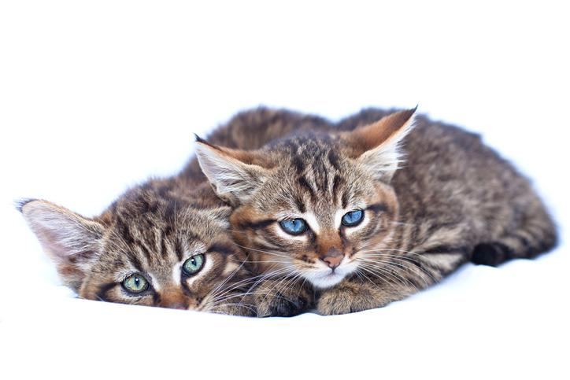

Un mamífero carnívoro asilvestrado que se encuentra disperso por bosques de África, América, Asia y Europa. En algunos lugares la destrucción de sus hábitats y otros factores han provocado que dicha especie se vea amenazada, incluyéndose en la lista de especies en peligro de extinción. podemos decir que su ancestro es el gato montés de Mastelli (Felis lunensis), el cual vivió en Europa durante el Pliocena, expandiéndose primero por el Medio Oriente y posteriormente hacia Asia y África, dando lugar hace ya más de 10 000 años al gato montés de estepa.
Felis silvestris silvestris, ubicado en la zona norte de la Península Ibérica.
Felis lybica jordansi, que sería el gato montés africano y lo encontraríamos en la isla de Mallorca.
Felis silvestris tartessia, que es de un tamaño mayor y de pelaje más oscuro que sus congéneres y se extendería por la zona centro y sur del territorio peninsular.

Su aspecto es prácticamente igual que el del lince ibérico, siendo habitualmente imposible distinguirlos salvo por el menor tamaño de los gatos monteses. Incluso se ha registrado la existencia de híbridos entre estas dos especies. Así pues, el gato montés presenta un pelaje entre pardo y gris, con patrón atigrado o moteado. Dicho pelo es grueso, denso, de longitud media y aspecto satinado. Su cola es alargada con la punta redonda. Y sus características orejas son grandes y puntiagudas, habitualmente con fondo rojizo. El cuerpo de los monteses es musculoso y robusto a la par que estilizado y flexible. Debido a su gran tamaño, el gato montés está considerado como un gato gigante, pesando hasta 8 kilogramos y midiendo desde 5 hasta 120 cm de alto. Su esperanza de vida suele ser de 6 a 12 años, encontrándose ejemplares que han alcanzado los 14 años.

Es un felino solitario y tranquilo pero que puede mostrarse agresivo si ve amenazada su vida o cuando está cazando, ya que está en juego su sustento. Además, el gato montés es un animal territorial, que no dudará en defender su hábitat, sobre todo los machos, quienes también marcarán con arañazos y orina su territorio, que solo compartirán con hembras y no con otros machos. Salvo en la época invernal, el gato montés es un animal nocturno que caza y se muestra activo durante las horas posteriores a la puesta del sol. Sin embargo, cuando es la época fría se adapta a las horas de actividad de sus presas, volviéndose por unos meses un animal diurno. Este detalle de su personalidad nos deja ver que es un animal que se adapta fácilmente a nuevos medios y formas de vida, es por ello que hay ejemplares que se han convertido en mascotas de familias de todo el mundo. Eso sí, recordemos que el carácter del gato montés no es como el de un gato doméstico, por lo que su temperamento agresivo natural puede surgir siempre que se sienta amenazado.

Habitualmente la alimentación del gato montés se basa en conejos, liebres y otros roedores, aunque sus presas son variadas e incluso los venados pueden estar entre ellas. Si la comida escasea los gatos monteses pueden convertirse en carroñeros, alimentándose de los restos de otros animales. Recordemos que son animales con una gran capacidad de adaptación. Antiguamente sus predadores principales eran animales como el lobo y el puma, pero a día de hoy el mayor peligro para la subsistencia del gato montés es el humano, que con la destrucción de su hábitat y la caza ha hecho que las poblaciones de gato montés se hayan visto mermadas considerablemente.

Son animales muy resistentes, pero como puede suceder con los felinos domésticos, pueden verse afectados por el coronavirus felino, la parvovirosis, la leucemia felina, el moquillo y afecciones causados por parásitos, acudir a profesionales en caso de encontrar un gato montés herido o enfermo. En tales casos, es recomendable llamar a las autoridades, contactar con guardas forestales o acudir directamente a centros de recuperación de fauna salvaje para notificar el hallazgo y dejar que sean ellos quienes se ocupen de la salud del animal.